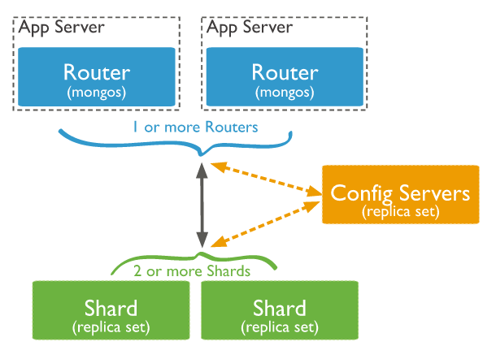
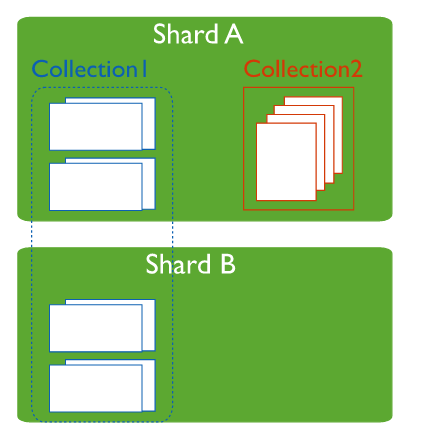
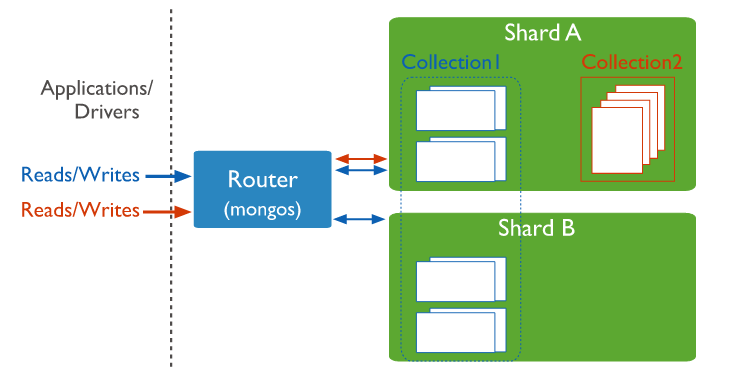
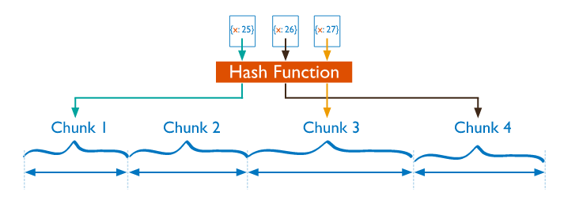
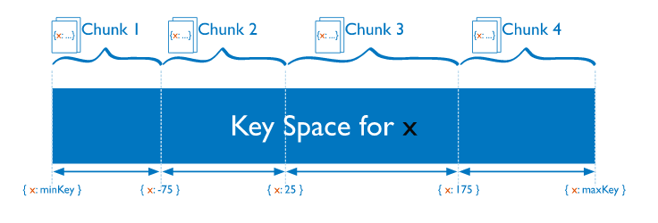

MongoDB复制集解决了数据库的备份与自动故障转移，但是围绕数据库的业务中当前还有两个方面的问题变得越来越重要，一是海量数据如何存储，二是如何高效地读写海量数据。尽管复制集也可以实现读写分离，如在primary节点上写，在secondary节点上读，但在这种方式下客户端读出来的数据有可能不是最新的，因为primary节点到secondary节点间的数据同步会带来一定延迟，而且这种方式也不能处理大量数据。mongodb引入了分片机制，实现了海量数据的分布式存储与高效的读写分离。复制集中的每个成员是一个mongod实例，但在分片部署上，每一个分片可能就是一个复制集
分片的使用会是数据库系统变得复杂。什么时候使用分片也是需要考虑的问题。
因此对于大数据的处理，要时刻监控MongoDB的磁盘I/O性能、可用内存的大小，在数据库内使用率达到一定程度时就要考虑分片了，通过分片使整个数据库分布在各个片上，每个片拥有数据库的一部分数据，从而降低内存使用率，提高读写性能。
为什么使用分片：

Shard（replica set）: 用于存储实际的数据块，实际生产环境中一个shard server角色可由几台机器组个一个replica set承担，防止主机单点故障。
Config Server（replica set）: mongod实例，存储了整个 ClusterMetadata，其中包括 chunk信息。
Routers（mongos）: 前端路由，客户端由此接入，且让整个集群看上去像单一数据库，前端应用可以透明使用。
分片集群中的一个片shard实际上就是一个复制集，当然一个片也可以是单个mongod实例，只是在分片集群的生产环境中，每个片只是保存整个数据库数据的一部分，如果这部分数据丢失了，那么整个数据库就不完整了。
配置服务器config server在整个分片集群中相当重要。上面说到mongos会从配置服务器同步元信息，因此配置服务器要能实现这些元信息的持久化。配置服务器上的数据如果丢失，那么整个分片集群就无法使用，因此在生产环境中要使用复制集部署配置服务器。
因此，出于高可用的考虑，架构中Config Server和shard必须部署为复制集。
MongoDB分片，实际上将一个表的数据拆分成多个子表，分散在多个数据库实例中。
如下图：

其中，Collection1使用了分片，Collection2没有使用分片。
分片集合对于客户端的读写操作来说，是透明的，Routers和Config Server会自动实现指定数据的路由，客户端只需像操作单个数据库实例一样操作数据库即可。


完全随机的片键，即散列片键（Hashed Shard Key）。这种片键虽然可以解决分发写操作的问题，但由于太过随机，导致写操作将被分散到整个集群上，不能实现指定目标范围的查询，每一个读操作可能要查询所有的片，这样影响读的性能。

适合片键的取值范围有限的集合。
结合校招：
例如校招的resume集合可以把年份year字段作为片键，这样我们插入的数据会按照year字段进行分析。
数据库会根据year字段将数据切割成几个数据块chunk。
这样，每次根据年份查询的时候就不需要查询全部数据，Routers会帮我们路由到指定年份的数据块，只对该数据块进行查询。
不过范围分片可能会导致数据分配不平衡的问题。
分片集群上的锁范围局限在每一个片上，而不是整个集群，每一个片上的操作都是独立的，因此不会影响其他片上的操作。分片集群通过路由器mongos分发读写操作到各个片上，整体上提高了系统的并发性和吞吐量。并不是所有的系统都适合部署成分片集合，只有当数据量打、读写请求很高时才适合用分片集群。一旦部署成分片集群，那么集群中的每一个片都应该部署成复制集的形式，提高系统的可靠性和故障恢复的能力。分片时片键的选择很重要，不好的片键会降低系统的性能。
但是，部署为分片会把系统架构变得复杂，运维的维护难度也会困难很多，校招项目不算大项目，个人感觉并不适合部署为分片。
对于数据量大引发的读写性能问题，例如resume，可以通过分表的形式，将resume根据校招社招及年份进行分表，提高读写性能。
举例：
将resume分为xz_2018_resume，xz_2017_resume，sz_2018_resume，sz_2017_resume，这样可以把数据量进行拆分，而用户界面的操作逻辑可以进行调整，例如默认返回2018年的数据，提供按钮，当用户需要返回全部数据时再进行多个表的数据合并。